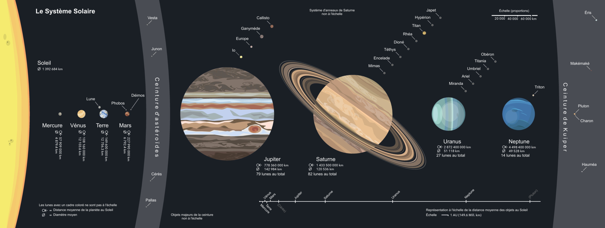

Bienvenue sur notre site d'exploration spatiale !
Explorez les mystères de l'espace avec nous...
Petite Présentation du système solaire
C'est quoi l'exploration spatiale ?
Tout d'abord, l'exploration spatiale est l'ensemble des activités qui sont réalisées dans l'espace. Elle remplit des objectifs scientifiques, économiques, ou militaires.
L'exploration scientifique comprend :
- L'étude de la Terre (climat, atmosphère, magnétosphère…).
- L'étude des corps célestes du Système solaire (Lune, Mars, Jupiter…).
- L'utilisation de télescopes spatiaux étudiant les exoplanètes, les galaxies et le cosmos.
- Ainsi que la réalisation d'expériences en apesanteur (dans l'ISS par exemple).
L'aspect économique de l'espace prend une importance prépondérante grâce à :
- Les télécommunications, comme par exemple pour l'entreprise SpaceX et Starlink qui fournit de l'internet grâce à une multitude de satellites placés en orbite basse de la Terre.
- La navigation par GPS que l'on retrouve partout : voiture, smartphone, montre, bateau, etc. Certaines entreprises comme Google (Google Maps ou Waze) ou les compagnies de transport exploitent cette technologie que nous utilisons tous les jours.
Enfin, bien que les activités militaires en soient bannies, l'espace joue un rôle croissant au sein des forces militaires :
- En effectuant de la reconnaissance optique ou radar en utilisant des satellites de reconnaissance ou espion.
- En utilisant des satellites conçus pour détecter le lancement d'un missile et en prendre des mesures militaires.
- Ou en utilisant des satellites conçus pour intercepter les signaux électroniques émis par les équipements militaires des forces armées adverses.